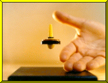

LEVITRON CENTRAL
The Amazing Levitron Anti-Gravity Top
Home Page
presented by UFO - The Levitron Company
"Bringing
Levitation to the Masses"

This website is not affiliated with or approved by Fascinations Toys & Gifts of Seattle, Washington.
Up until August 24th 1997 UFO, who owns and operates this website, was the largest single retailer in the world of levitrons, which are spin-stabilized permanent magnet levitating tops. Then, UFO became aware of the opinions of several respected scientists that our business associate, the man publicly taking credit as the inventor of the device, was not, in fact, the real inventor, and that the invention had essentially been "ripped off." After an extensive investigation, we here at UFO became convinced - to our great dismay - that the scientists were correct.
When we went to our business associate with the facts, he expressed remorse, gave us reassurances, then turned around and cut off UFO from the existing levitrons, copycatted our instructional video, and filed a lawsuit in an attempt to seize this website.
In self-defense, we "froze" our commercial site as it was in August, 1997, and wrote and published the entire "Hidden History of the Levitron" story - with extensive reference links - so that you, the web-wise levitator, can decide for yourself if you want to buy one of these devices right now.
LINK HERE if you want to read the story and decide for yourself.